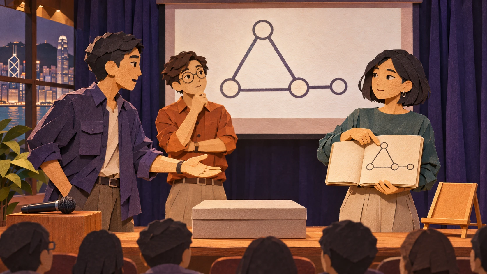

The showcase · rehearsal, five minutes before your slot
You have one control: hold the room. Press and hold (or hold Space) to quiet everyone. Watch Asha: when she takes a breath, that’s your moment. Hold too long for no reason and Kit loses steam.